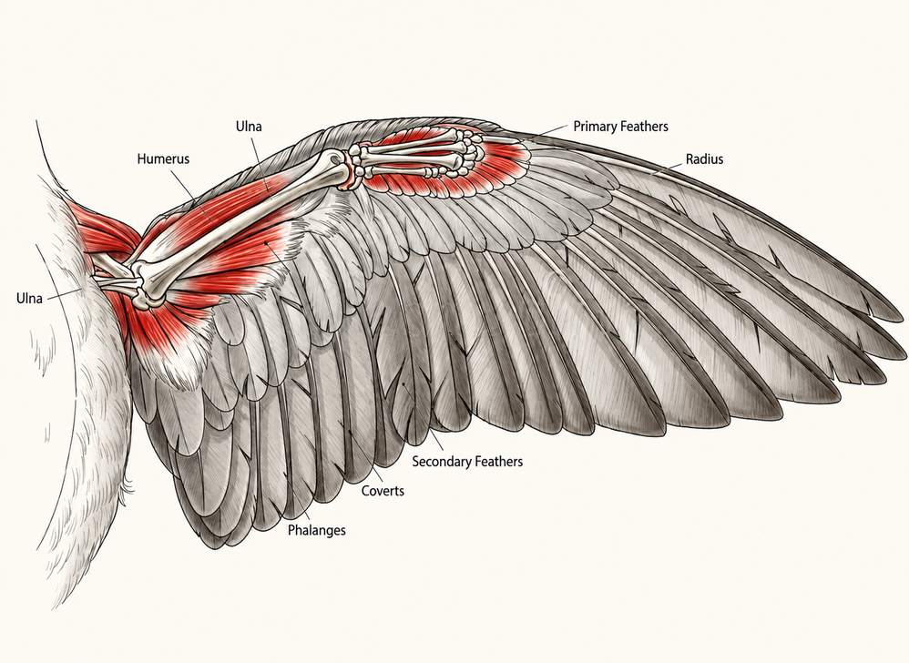

Ptaki wyewoluowały z dinozaurów. Ich bezpośrednich przodków poszukuje się wśród dromeozaurów bądź troodontów, zwierząt niezdolnych jeszcze do lotu. Zaliczająca się do dromeozaurów Mahakala sprzed 70 milionów lat cechowała się długą i wąską łopatką, zreukowaną w stosunku do spotykanej u większości celurozaurów kością ramienną, wygiętą kością łokciową (co akurat stanowiło plezjomorfię), silnie spłaszczoną. Zwraca na niej uwagę guzek mięśnia dwugłowego. Z kolei koniec dalszy kości promieniowej był poszerzony i spłaszczony, co jest cechą Paraves. Plezjomorfię Avialae stanowią zaś półksiężycowate kości nadgarstka pokrywające dalej leżące kości śródręcza[1]. Nieptasie dinozaury pokryte już były piórami, przy czym struktury przypominające skrzydła występowały niekiedy nie tylko w przypadku górnych, ale również dolnych kończyn, jak w przypadku mikroraptora – naukowcy piszą o „czteroskrzydłych dinozaurach”
Oparciem dla skrzydeł ptasich jest pas barkowy, silnie powiązany z klatką piersiową. Pas ten składa się z trzech par kości: kruczej (coracoideum), łopatki (scapula, o szablastym kształcie) i obojczyka (clavicula). Kości obojczyka, skierowane w dół, zrastają się ze sobą, tworząc widełki, szczególnie dobrze rozwinięte u ptaków latających